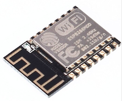

verschillen ESP8266
- ESP-12
- ESP-01
- ESP-01 (Black Edition)
- ESP-01S
ESP-12 
Deze ESP8266 heeft 4MB flash geheugen. Een blauwe led is aangesloten op GPIO-02.
Daarnaast heeft de ESP-12 12 GPIO pinnen waarvan de meeste vrij te gebruiken zijn.
Versie 4 van de DSMR-logger is ontworpen rond de ESP-12.
ESP-01
De ESP-01 heeft slechts 512MB flash geheugen en is niet geschikt voor de DSMRloggerWS firmware!
ESP-01 (Black Edition) 
Dit is de versie van de ESP8266 waar de DSMR-logger Versie 3 voor is
ontwikkeld.
Deze ESP-01 is, met beperkte functionaliteit, geschikt voor de
DSMRloggerWS firmware. Hij heeft 1MB flash geheugen, een rode
power led en een blauwe led die op GPIO-01 is aangesloten.
ESP-01S
Oorspronkelijk had deze ESP-01 ook slecht 512MB flash geheugen.
De versie die nu meestal verkocht wordt heeft echter 1MB geheugen.
Het is dus wel zaak op te letten wat voor versie je koopt!
De ESP-01S heeft geen power led en de blauwe led is niet op GPIO-01
maar op GPIO-02 aangesloten (pas dit aan in de boards setting!).
Deze versie van de ESP-01 is, met beperkte functionaliteit, geschikt
voor de DSMRloggerWS firmware.